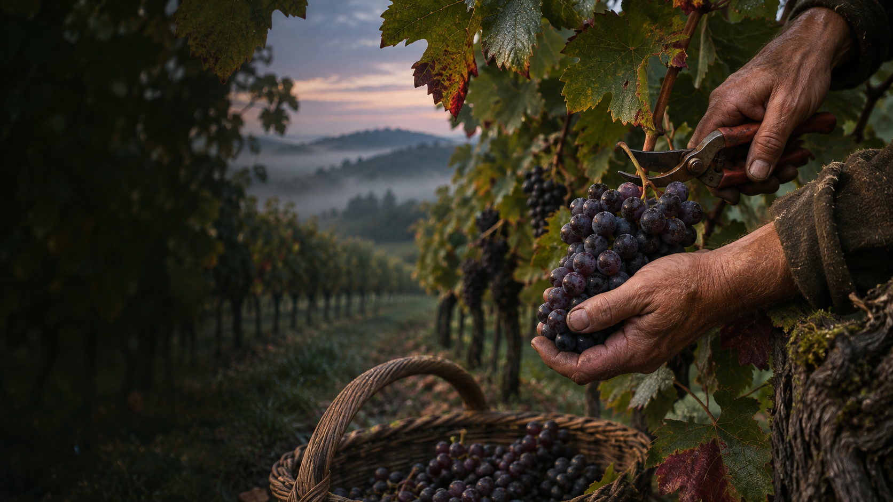

01 — THE VINEYARD · BLOCK IVEvery evening
HAND-PICKED AT FIRST LIGHT / PINOT NOIREvery evening
begins with
a little earth.
Cold hands. The first light. One perfect cluster.
Follow a Pinot Noir from our vines to your glass.